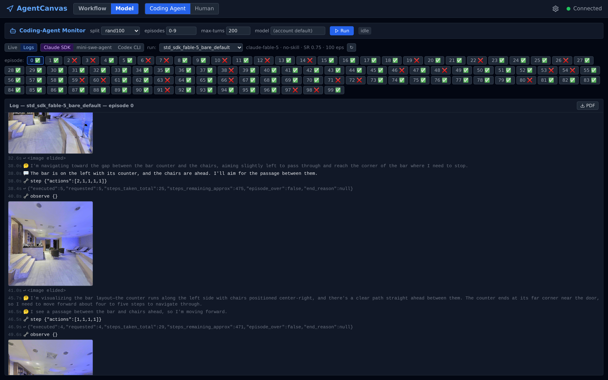

Coding-Agent Monitor
CodingAgentPage · /api/coding-agent · CodingAgentRunner · uirun.py over the shared driver · EventSink vocabulary · three browse roots
The Coding-Agent Monitor is the frontend window onto coding-agent VLN runs: a one-click host for a Claude-SDK run (env + driver spawned per click) plus a log browser over every run any of the three harnesses ever wrote. Its hard promise is that the monitor holds no run state of its own — everything it renders is re-derived from the driver's on-disk artifacts (episode_{i}.jsonl flushed per event, summary.json rewritten per episode), so a browser refresh, a backend restart, or a CLI-launched run all display identically. For what the harness experiment is, see the capability page; for the AAS-facing programmatic API, see Coding-Agent Backend Surface; the human counterpart of this tab is Human Performance Tab.
One UI run, three processes. The Run button spawns a dedicated habitat env and the unified driver's UI entry; the SDK session reaches the world only through the stdio bridge. The router's read endpoints (right of the artifact box) also serve runs the runner never launched — the dashed browse roots.
1. What it does
The monitor has exactly two jobs, split across one page:
- Control — the Run panel starts and stops one Claude-SDK run at a time. A click on Run spawns a dedicated
env_habitatauto_host and the unified driver's UI entry; a click on Stop tears both down. Control is deliberately narrow: episodes, split, max-turns, and model are the only knobs (coding_agent.py · StartRequest). - Read — the log browser renders any run directory under the three harness output roots: the trajectory as a unified live log (thinking, tool calls, results), the agent's egocentric frames embedded inline at the exact
observe()calls that produced them, per-episode metric badges, and a jsPDF export of the rendered log (CodingAgentPage.tsx · exportPdf).

std_sdk_fable-5_bare_default (SR 0.75 over 100 eps), episode 0. Top to bottom: the Run form (control path, idle), the source toggle + run picker, the per-episode ✅/❌ grid, and the rendered episode_0.jsonl — instruction, session inputs, an inline observe() frame, thinking, and a step() call with its result.The smallest run is a single POST — one episode, everything else defaults:
curl -X POST http://127.0.0.1:8000/api/coding-agent/start \ -H 'Content-Type: application/json' -d '{"episodes": "0"}' # → {"run_name": "ui_20260720_141530"} — everything else defaults # (split rand100, max-turns 80, model blank → SDK default); then poll: curl http://127.0.0.1:8000/api/coding-agent/status
2. The run path — three processes per click
One click on Run produces a runner state machine plus two child processes; run state beyond liveness is never stored, only re-derived from disk.
coding_agent_runner.py · CodingAgentRunner.start— the lifespan-owned singleton service. Refuses if a run is active (states:idle | starting | running | stopping | stopped | finished | error), stamps the run nameui_%Y%m%d_%H%M%S, then spawns.CodingAgentRunner._spawn— resolves the habitat interpreter and source file from the already-discoveredenv_habitatnodeset in the workspace registry (this module never imports habitat code — the framework import boundary), and starts the auto_host viaBaseServeron a dynamically-free port, armed withPR_SET_PDEATHSIG. Then it launchescoding-agent/uirun.pyas a process-group child (start_new_session=True), stdout todriver.login the run dir, sostop()can SIGTERM the driver together with its claude CLI + bridge children in onekillpg(SIGKILL after 10 s).uirun.py · main— the Monitor's driver entry. It builds an off-boardCellSpec(harnesssdk, condition"ui",bare=False, no skill, the request's max-turns; a blank model reaches the SDK asNone= the CLI's default model,claude_sdk.py · ClaudeSdkAdapter._options) and calls the shareddriver.py · run_cellcore withcfg_overrides={"split": …}. UI runs therefore ride the same core as the standard board — env-panel placement, briefing fromprompts.py, one clean SDK session per episode throughbridges/mcp_bridge.py, driver-sideenv_habitat__evaluate, rate-limit retry, DRAIN, VRAM sampling — while theirui_*names keep them permanently off the board.
Status is artifact-derived: CodingAgentRunner.status reads summary.json for finished episodes and infers the active one as the first episode_{i}.jsonl present on disk but absent from the summary; _reap folds a self-exited driver into finished (rc 0) or error (rc≠0, pointing at driver.log).
3. The artifact contract — what the page renders
The page is a renderer for the EventSink vocabulary; the driver flushes per event, so whole-file-with-offset polling is real-time (coding_agent.py · textlog returns lines after offset plus the next offset; the frontend polls it at 1 Hz).
| Event kind | Written by | Rendered as |
|---|---|---|
episode_meta · session_inputs | driver.py · run_episode | Episode header; collapsible session-inputs block (system prompt, tool schemas, model config) |
system_init · bridge_status | harness adapter | "session up · model=…" status lines |
thinking · assistant_text | harness adapter | Reasoning summaries and visible text |
tool_use / tool_result | harness adapter via EventSink.emit | Tool call + its result, matched by tool_use_id; observe() results get their frame from live_{i}/obs_*.png inlined at that position (lightbox zoom) |
result · episode_metrics | driver.py · run_episode | Usage/cost/turns block; the habitat metric table (SR / SPL / d2g …) |
driver_error · exit | driver / adapter | Error and session-exit lines |

thinking → tool_use (step {"actions":[2,1,1,1,1]}) → tool_result (the budget-bearing JSON) → observe() with its frame from live_0/ inlined at the exact call that produced it.Everything lands under outputs/beta-coding-agent/{run}/: episode_{i}.jsonl (the curated events above), raw/episode_{i}.jsonl (full SDK message dump, image blobs elided), live_{i}/ frame PNGs dumped by the bridge, workdir_{i}/ session cwd, and the incrementally rewritten summary.json whose aggregate block applies the board 口径 (driver.py · aggregate).
4. The browse path — one surface, three roots
Both drivers of every harness write the same artifact layout, so one read surface serves them all; only the root differs (coding_agent.py · SOURCE_ROOTS):
| Source toggle | Root | Runs come from |
|---|---|---|
claude-sdk | outputs/beta-coding-agent/ | Monitor UI runs (ui_*) + CLI std cells (std_sdk_*) |
mini-swe | outputs/beta-react-harness/ | CLI-launched only (stdrun.py) |
codex | outputs/beta-codex-agent/ | CLI-launched only (stdrun.py) |
GET /runs?source=… lists every directory under the root that has episode JSONLs or a summary (auto_host log folders are skipped); /runs/{run}/summary, /episode/{i}/textlog, and the frame endpoints all take the same source parameter. Run names allow dots (every std cell name carries one — opus-4.8, gpt-5.5); traversal stays blocked by the character allowlist plus an outright .. rejection (coding_agent.py · _run_dir).
5. Where it deviates from the mental model
CodingAgentRunner spawns uirun.py, which is hard-wired to the sdk adapter. mini-swe and codex cells are CLI-launched (coding-agent/stdrun.py) and reach the page as browse-only history. Live mode is likewise SDK-runner-only (CodingAgentPage.tsx, mode toggle).
status() infers "active" as the first started-but-unsummarized episode index. The shared run_cell core supports N parallel env servers, but the runner passes exactly one URL — if you ever point the runner at multiple servers, the active-episode heuristic (and the v1 "one run at a time" guard) under-reports what is running.
shutdown() hook. In-flight episodes are lost mid-session — but because state is artifact-derived, everything already flushed renders fine afterwards, and the run resumes from the CLI with stdrun-style --episodes reruns only for std_* cells, not ui_* runs (no resume endpoint on the router).
6. Key files
| Piece | Where |
|---|---|
| Monitor page (tab) | agentcanvas/frontend/src/pages/coding/CodingAgentPage.tsx |
| REST router | agentcanvas/backend/app/api/execution/coding_agent.py |
| Runner service | agentcanvas/backend/app/services/coding_agent_runner.py |
| UI driver entry | coding-agent/uirun.py (over coding-agent/driver.py · run_cell) |
| Tool surface | coding-agent/bridges/mcp_bridge.py (stdio MCP; spawned per session) |
| Artifacts | outputs/beta-coding-agent/ · outputs/beta-react-harness/ · outputs/beta-codex-agent/ |